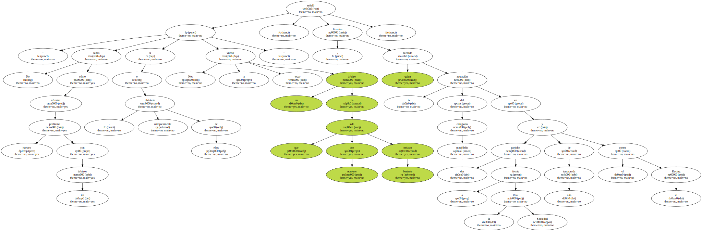
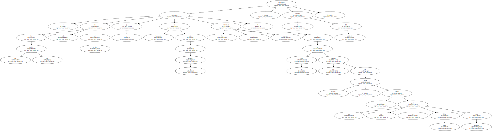
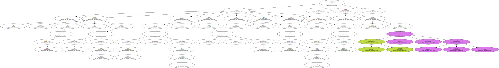
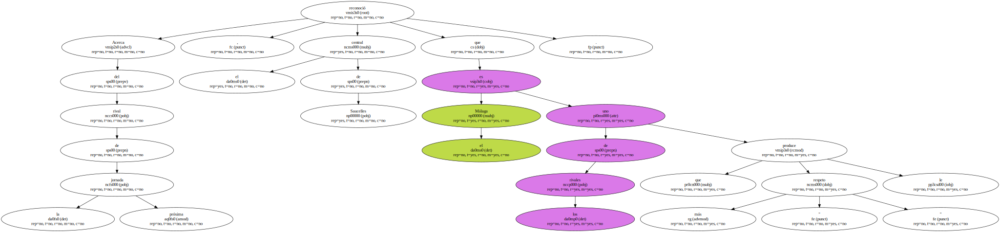
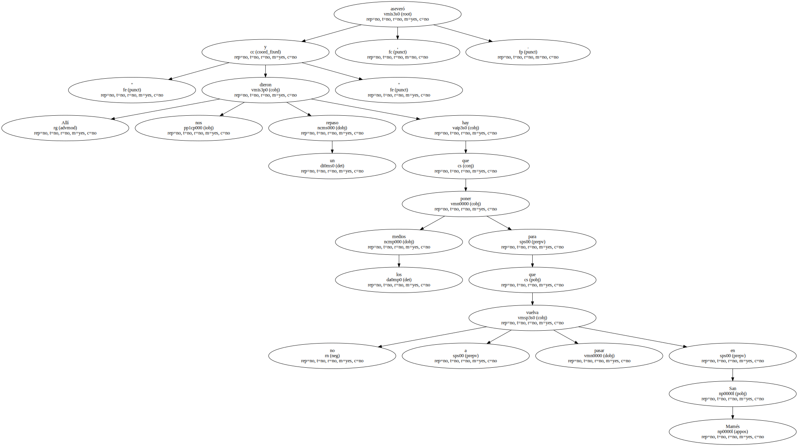
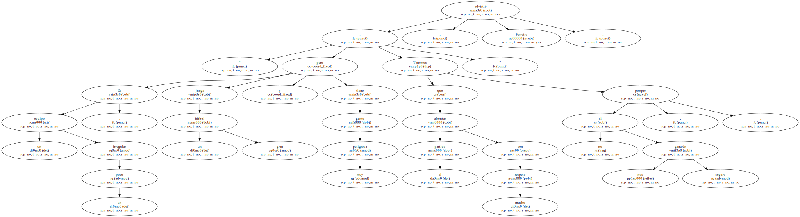
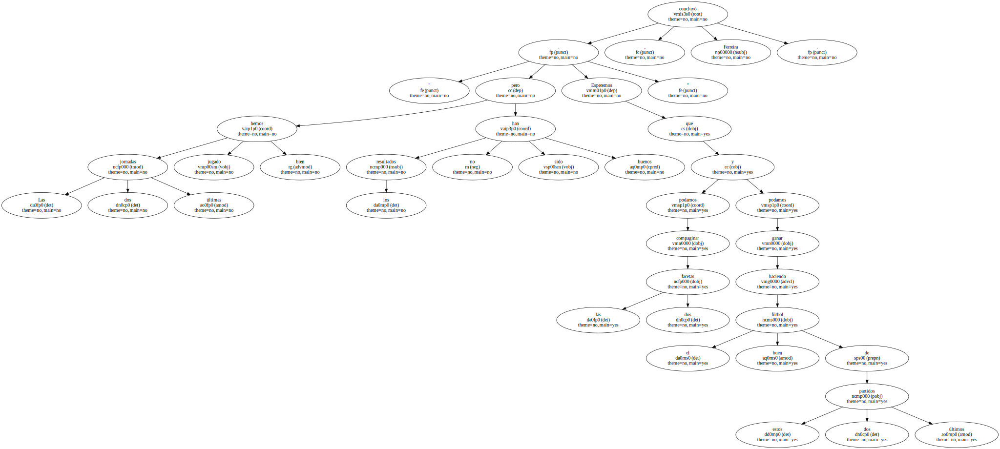

El jugador del Athletic Club Patxi Ferreira " avisó " hoy que el árbitro designado para dirigir el partido que el próximo domingo enfrentará al equipo rojiblanco con el Málaga en San Mamés , Carlos Magía Dávila , ha sido " bastante nefasto " para el Athletic.

" No sabes cómo afrontar nuestro problema con los árbitros , si olvidarte olímpicamente de ellos o no hacerlo . Nos vuelve a tocar un árbitro que con nosotros ha sido bastante nefasto " , señaló Ferreira , quien recordó la actuación del colegiado madrileño en dos partidos frente a la Real Sociedad y el de esta temporada contra el Racing.
" En los dos derbis pitó todo al revés y en Santander , más de lo mismo . Nos volvemos a exponer a lo que nos ha pasado con Japón Sevilla , un árbitro que no se porta nada bien con nosotros " , manifestó el defensa del Athletic.
" Habrá que avisar que viene Magía Dávila , como avisaron los rivales con Japón Sevilla . Si después del partido nos vemos igual que esta semana no será porque alguien no lo ha advertido . Me da igual que pueda tener repercusión dentro del campo , pero estoy en el deber de avisarlo " , explicó Ferreira , quien confesó que el árbitro madrileño no le trae " buenos recuerdos ".
Acerca del rival de la próxima jornada , el central de Saucelles reconoció que el Málaga es uno de los rivales que más " respeto " le produce.
" Allí nos dieron un repaso y hay que poner los medios para que no vuelva a pasar en San Mamés " , aseveró.
" Es un equipo un poco irregular , pero juega un gran fútbol y tiene gente muy peligrosa . Tenemos que afrontar el partido con mucho respeto porque si no , nos ganarán , seguro " , advirtió Ferreira.
El jugador del Athletic señaló que el público de San Mamés puede salir satisfecho del campo si el equipo rojiblanco alcanza el nivel de juego desplegado ante Real Mallorca y Deportivo , aunque matizó que además de ofrecer espectáculo , " hay que ganar los partidos ".

" Las dos últimas jornadas hemos jugado bien pero los resultados no han sido buenos . Esperemos que podamos compaginar las dos facetas y podamos ganar haciendo el buen fútbol de estos dos últimos partidos " , concluyó Ferreira.
